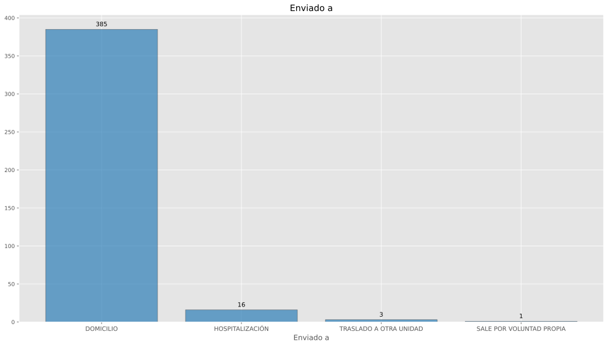

Datos de unidades de segundo y tercer nivel del IMSS Bienestar
Agosto de 2026
Luis M. González
OCIMB000560
HC IXTLAN DE JUÁREZ
Datos generales del catálogo de CLUES
Con base en (Secretaría de Salud - DGIS, 16 de julio de 2026)
| Nivel de atención: | SEGUNDO NIVEL |
| Tipología: | HOSPITAL INTEGRAL (COMUNITARIO) |
| Subtipología: | NO ESPECIFICADO |
| Tipo de establecimiento: | HOSPITALIZACIÓN |
| Estrato: | URBANO |
| Estatus: | FUERA DE OPERACIÓN |
| Región: | SURESTE |
| Entidad: | OAXACA |
| Municipio: | IXTLÁN DE JUÁREZ |
| Localidad: | IXTLÁN DE JUÁREZ |
| Coordenadas: | 17.331535, -96.488085 |
| Domicilio: | CALLE VENUSTIANO CARRANZA No. SIN NÚMERO |
| PUEBLO IXTLAN DE JUAREZ | |
| IXTLÁN DE JUÁREZ, OAX | |
| CP 68725 | |
| Fecha de construcción: | 1990-08-01 |
| Fecha de inicio de operación: | 1990-08-01 |
| Propiedad del inmueble: | PROPIO |
| Último movimiento: | BAJA |
| Fecha del último movimiento: | 2026-02-03 |
| Motivo de baja: | SE SUSTITUYE |
| Fecha efectiva de baja: | 2025-03-21 |
Mapa

Egresos hospitalarios
Con base en (Secretaría de Salud - DGIS, 4 de agosto de 2026a)
Número de egresos por año
| clues | Año | Egresos |
|---|---|---|
| OCIMB000560 | 2021 | 266 |
| OCIMB000560 | 2022 | 399 |
| OCIMB000560 | 2023 | 448 |
| OCIMB000560 | 2024 | 478 |
| OCIMB000560 | 2025 | 479 |
| OCIMB000560 | 2026 | 55 |

Afecciones principales de egresos (2026)
| Posición | Afección principal | Egresos |
|---|---|---|
| 1 | PARTO ÚNICO ESPONTÁNEO, SIN OTRA ESPECIFICACIÓN | 7 |
| 2 | AMENAZA DE ABORTO | 5 |
| 3 | PARTO POR CESÁREA, SIN OTRA ESPECIFICACIÓN | 4 |
| 4 | ANEMIA QUE COMPLICA EL EMBARAZO, EL PARTO Y EL PUERPERIO | 2 |
| 5 | HIPERTENSIÓN ESENCIAL (PRIMARIA) | 2 |
| 6 | INFLUENZA CON OTRAS MANIFESTACIONES RESPIRATORIAS, VIRUS NO IDENTIFICADO | 2 |
| 7 | CÁLCULO DE LA VESÍCULA BILIAR CON COLECISTITIS AGUDA | 1 |
| 8 | DIABETES MELLITUS TIPO 2, SIN MENCIÓN DE COMPLICACIÓN | 1 |
| 9 | EDEMA PULMONAR | 1 |
| 10 | ENFERMEDADES DEL SISTEMA CIRCULATORIO QUE COMPLICAN EL EMBARAZO, EL PARTO Y EL PURPERIO | 1 |
| 11 | ESTERILIZACIÓN | 1 |
| 12 | FRACTURA DEL PERONÉ SOLAMENTE | 1 |
| 13 | GASTROENTERITIS Y COLITIS DE ORIGEN NO ESPECIFICADO | 1 |
| 14 | HEMORRAGIA VAGINAL Y UTERINA ANORMAL, NO ESPECIFICADA | 1 |
| 15 | HERIDA DE MIEMBRO INFERIOR, NIVEL NO ESPECIFICADO | 1 |
| 16 | HERNIA INGUINAL BILATERAL, SIN OBSTRUCCIÓN NI GANGRENA | 1 |
| 17 | HERNIA UMBILICAL SIN OBSTRUCCIÓN NI GANGRENA | 1 |
| 18 | HIDROCELE, NO ESPECIFICADO | 1 |
| 19 | ICTERICIA NEONATAL, NO ESPECIFICADA | 1 |
| 20 | INFARTO CEREBRAL, NO ESPECIFICADO | 1 |
| 21 | OTROS | 19 |

Servicios de ingreso (2026)
| Posición | Servicio de ingreso | Egresos |
|---|---|---|
| 1 | GINECO OBSTETRICIA | 30 |
| 2 | MEDICINA INTERNA | 13 |
| 3 | PEDIATRÍA | 7 |
| 4 | CIRUGÍA GENERAL | 4 |
| 5 | GINECOLOGÍA | 1 |

Servicios de egreso (2026)
| Posición | Servicio de egreso | Egresos |
|---|---|---|
| 1 | GINECO OBSTETRICIA | 29 |
| 2 | MEDICINA INTERNA | 14 |
| 3 | PEDIATRÍA | 7 |
| 4 | CIRUGÍA GENERAL | 4 |
| 5 | GINECOLOGÍA | 1 |

Procedencia (2026)
| Posición | Procedencia | Egresos |
|---|---|---|
| 1 | URGENCIAS | 54 |
| 2 | OTRO | 1 |

Motivo de egreso (2026)
| Posición | Motivo de egreso | Egresos |
|---|---|---|
| 1 | MEJORÍA | 54 |
| 2 | TRASLADO A OTRA UNIDAD | 1 |

Procedimientos (egresos)
Procedimientos quirúrgicos (egresos 2026)
| Posición | Procedimiento quirúrgico | Egresos |
|---|---|---|
| 1 | CESÁREA CLÁSICA BAJA | 11 |
| 2 | OTRA DESTRUCCIÓN U OCLUSIÓN BILATERAL DE LAS TROMPAS DE FALOPIO | 5 |
| 3 | OTRO LEGRADO POR ASPIRACIÓN DEL ÚTERO | 2 |
| 4 | OTRA INCISIÓN CON DRENAJE DE PIEL Y TEJIDO SUBCUTÁNEO | 1 |
| 5 | OTRA REPARACIÓN DE HERNIA | 1 |
| 6 | OTRA REPARACIÓN DEL ÚTERO Y SUS ESTRUCTURAS DE SOPORTE | 1 |
| 7 | DILATACIÓN Y LEGRADO DESPUÉS DE PARTO O ABORTO | 1 |
| 8 | ASPIRACIÓN DE OVARIO | 1 |
| 9 | OTRA HERNIORRAFIA UMBILICAL ABIERTA | 1 |
| 10 | REPARACIÓN DE OTRO DESGARRO OBSTÉTRICO ACTUAL | 1 |
| 11 | SUTURA DE DESGARRO DE LA VULVA O EL PERINEO ACTUAL | 1 |
| 12 | EXCISIÓN DE HIDROCELE (DE TÚNICA VAGINAL) | 1 |

Procedimientos terapéuticos (egresos 2026)
| Posición | Procedimiento terapéutico | Egresos |
|---|---|---|
| 1 | INYECCIÓN O INFUSIÓN DE ELECTROLITOS | 23 |
| 2 | INYECCIÓN DE ESTEROIDE | 8 |
| 3 | OTRO PARTO ASISTIDO MANUALMENTE | 7 |
| 4 | INYECCIÓN DE ANTIBIÓTICO | 3 |
| 5 | CURACIÓN DE HERIDA | 3 |
| 6 | OTRO ENRIQUECIMIENTO POR OXÍGENO | 3 |
| 7 | OTRA FOTOTERAPIA | 2 |
| 8 | OTRA IRRIGACIÓN DE HERIDA | 2 |
| 9 | TRANSFUSIÓN DE OTRA SUSTANCIA | 2 |
| 10 | ADMINISTRACIÓN DE VACUNA COMBINADA DE DIFTERIA-TÉTANOS-TOSFERINA | 1 |
| 11 | MEDICACIÓN RESPIRATORIA ADMINISTRADA MEDIANTE NEBULIZADOR | 1 |
| 12 | INSERCIÓN DE CATÉTER URINARIO PERMANENTE | 1 |
| 13 | APLICACIÓN DE VENDAJE ENYESADO | 1 |

Procedimientos de diagnóstico (egresos 2026)
| Posición | Procedimiento de diagnóstico | Egresos |
|---|---|---|
| 1 | EXAMEN MICROSCÓPICO DE SANGRE. OTRO EXAMEN MICROSCÓPICO | 14 |
| 2 | CONSULTA NO ESPECIFICADA DE OTRA MANERA | 7 |
| 3 | ULTRASONOGRAFÍA DIAGNÓSTICA DEL ÚTERO GRÁVIDO | 3 |
| 4 | OTRAS RADIOGRAFÍAS TORÁCICAS | 2 |
| 5 | RADIOGRAFÍA TORÁCICA RUTINARIA, DESCRITA COMO TAL | 2 |

Urgencias
Con base en (Secretaría de Salud - DGIS, 4 de agosto de 2026b)
Número de urgencias por año
| clues | Año | Urgencias |
|---|---|---|
| OCIMB000560 | 2023 | 2161 |
| OCIMB000560 | 2024 | 2478 |
| OCIMB000560 | 2025 | 3494 |
| OCIMB000560 | 2026 | 405 |

Afecciones principales de urgencias (2026)
| Posición | Afección principal | Urgencias |
|---|---|---|
| 1 | FARINGITIS AGUDA, NO ESPECIFICADA | 56 |
| 2 | SUPERVISIÓN DE EMBARAZO NORMAL NO ESPECIFICADO | 32 |
| 3 | HIPERTENSIÓN ESENCIAL (PRIMARIA) | 22 |
| 4 | INFLUENZA CON OTRAS MANIFESTACIONES RESPIRATORIAS, VIRUS NO IDENTIFICADO | 19 |
| 5 | INFECCIÓN AGUDA DE LAS VÍAS RESPIRATORIAS SUPERIORES, NO ESPECIFICADA | 12 |
| 6 | GASTROENTERITIS Y COLITIS DE ORIGEN NO ESPECIFICADO | 12 |
| 7 | OTITIS MEDIA, NO ESPECIFICADA | 10 |
| 8 | TRAUMATISMOS SUPERFICIALES MÚLTIPLES, NO ESPECIFICADOS | 9 |
| 9 | OTROS DOLORES ABDOMINALES Y LOS NO ESPECIFICADOS | 8 |
| 10 | DIABETES MELLITUS TIPO 2, SIN MENCIÓN DE COMPLICACIÓN | 8 |
| 11 | INFECCIÓN DE VÍAS URINARIAS, SITIO NO ESPECIFICADO | 6 |
| 12 | CONSULTA, NO ESPECIFICADA | 5 |
| 13 | RINOFARINGITIS AGUDA [RESFRIADO COMÚN] | 5 |
| 14 | AMENAZA DE ABORTO | 5 |
| 15 | INFECCIÓN AGUDA NO ESPECIFICADA DE LAS VÍAS RESPIRATORIAS INFERIORES | 4 |
| 16 | OTRAS OBSTRUCCIONES DEL INTESTINO | 4 |
| 17 | ESGUINCES Y TORCEDURAS DEL TOBILLO | 4 |
| 18 | CÁLCULO DE LA VESÍCULA BILIAR CON COLECISTITIS AGUDA | 4 |
| 19 | INTOXICACIÓN ALIMENTARIA BACTERIANA, NO ESPECIFICADA | 4 |
| 20 | DISPEPSIA FUNCIONAL | 4 |
| 21 | OTROS | 172 |

Motivo de urgencia (2026)
| Posición | Motivo de urgencia | Urgencias |
|---|---|---|
| 1 | MÉDICA | 318 |
| 2 | PEDIÁTRICA | 43 |
| 3 | GINECO-OBSTÉTRICA | 33 |
| 4 | ACCIDENTES, ENVENENAMIENTO Y VIOLENCIA | 11 |

Tipo de urgencia (2026)
| Posición | Tipo de urgencia | Urgencias |
|---|---|---|
| 1 | URGENCIA NO CALIFICADA | 363 |
| 2 | URGENCIA CALIFICADA | 42 |

Tipo de cama de urgencia (2026)
| Posición | Tipo de cama | Urgencias |
|---|---|---|
| 1 | NO ESPECIFICADO | 340 |
| 2 | CAMA DE OBSERVACION | 43 |
| 3 | SIN CAMA | 20 |
| 4 | CAMA DE CHOQUE | 2 |

Enviado a… (2026)
| Posición | Enviado a | Urgencias |
|---|---|---|
| 1 | DOMICILIO | 385 |
| 2 | HOSPITALIZACIÓN | 16 |
| 3 | TRASLADO A OTRA UNIDAD | 3 |
| 4 | SALE POR VOLUNTAD PROPIA | 1 |

Procedimientos terapéuticos (urgencias 2026)
| Posición | Procedimiento terapéutico | Urgencias |
|---|---|---|
| 1 | INYECCIÓN O INFUSIÓN DE ELECTROLITOS | 5 |
| 2 | CURACIÓN DE HERIDA | 1 |
| 3 | INYECCIÓN DE ANTIBIÓTICO | 1 |

Procedimientos de diagnóstico (urgencias 2026)
| Posición | Procedimiento de diagnóstico | Urgencias |
|---|---|---|
| 1 | CONSULTA NO ESPECIFICADA DE OTRA MANERA | 67 |
| 2 | ELECTROCARDIOGRAMA | 3 |
| 3 | OTRAS RADIOGRAFÍAS DEL TUBO DIGESTIVO | 1 |
| 4 | RADIOGRAFÍA ÓSEA DEL MUSLO, LA RODILLA Y LA PIERNA INFERIOR | 1 |
| 5 | RADIOGRAFÍA ÓSEA DEL TOBILLO Y EL PIE | 1 |

Indicador 77. Promedio de estancia hospitalaria
ATN-09
Fuente de datos:
- Catálogo de CLUES, (Secretaría de Salud - DGIS, 16 de julio de 2026)
- Egresos hospitalarios, (Secretaría de Salud - DGIS, 4 de agosto de 2026a)
- SINERHIAS, (Secretaría de Salud - DGIS, 30 de julio de 2026)
Descripción
Exhibe número promedio de días que un paciente permanece internado en el hospital.
Proporciona una visión sobre la duración de las estancias hospitalarias y puede reflejar la eficiencia del cuidado médico y la complejidad de los casos atendidos, en hospitales del IMSS Biienestar.
Cálculo
\[ Indicador_{77} = \frac{d_{e}}{e_{h}} \]
Donde:
\(d_{e} =\) Total de días estancia de egresos hospitalarios durante periodo de análisis
\(e_{h} =\) Total de egresos hospitalarios
Calificaciones
| Calificación | Rango |
|---|---|
| Óptimo | 3.96 - 5.85 |
| Esperado | 5.86 - 6.42 |
| Regular | > 6.42 |
| Crítico | < 3.96 |
Resultado
| clues | Dias estancia | Egresos | Indicador 77 | Calificación |
|---|---|---|---|---|
| OCIMB000560 | 118 | 55 | 2.15 | Crítico |
Indicador 78. Consulta de urgencias por consultorio
ATN-10
Fuente de datos:
- Catálogo de CLUES, (Secretaría de Salud - DGIS, 16 de julio de 2026)
- Urgencias, (Secretaría de Salud - DGIS, 4 de agosto de 2026b)
- SINERHIAS, (Secretaría de Salud - DGIS, 30 de julio de 2026)
Descripción
Muestra el número de atenciones (consultas) de urgencia médica en promedio por consultorio disponible, de manera mensual en hospitales del IMSS Bienestar.
Cálculo
\[ Indicador_{78} = \frac{u_{m}}{c_{u} \cdot \Delta t} \]
Donde:
\(u_{m} =\) Total de atenciones en servicio de urgencias médicas
\(c_{u} =\) Total de consultorios registrados para el servicio de urgencia médica
\(\Delta t =\) Número de días del periodo de análisis
Calificaciones
| Calificación | Rango |
|---|---|
| Óptimo | 15 - 25 |
| Esperado | 10 - 14 o 26 - 30 |
| Regular | 5 - 9 o > 30 |
| Crítico | < 5 |
Resultado
| clues | Urgencias | Consultorios urgencias | Indicador 78 | Calificación |
|---|---|---|---|---|
| OCIMB000560 | 405 |
Indicador 79. Índice de rotación
ATN-11
Fuente de datos:
- Catálogo de CLUES, (Secretaría de Salud - DGIS, 16 de julio de 2026)
- Egresos hospitalarios, (Secretaría de Salud - DGIS, 4 de agosto de 2026a)
- SINERHIAS, (Secretaría de Salud - DGIS, 30 de julio de 2026)
Descripción
Mide la Proporción de pacientes hospitalizados por cama disponible por mes.
Proporciona una visión sobre la utilización de la capacidad hospitalaria, en unidades de salud del IMSS Bienestar.
Cálculo
\[ Indicador_{79} = \frac{e_{h}}{c_{c} \cdot \Delta t} \]
Donde:
\(e_{h}=\) Total de egresos hospitalarios
\(c_{c} =\) Total de camas censables
\(\Delta t =\) Número de días del periodo de análisis
Calificaciones
| Calificación | Rango |
|---|---|
| Óptimo | 3.91 - 5.1 |
| Esperado | 3.0 - 3.90 o 5.11 - 6.0 |
| Regular | 2.0 - 2.9 |
| Crítico | < 2.0 |
Resultado
| clues | Egresos | Camas censables | Indicador 79 | Calificación |
|---|---|---|---|---|
| OCIMB000560 | 55 | 0 |
Indicador 80. Proporción de egresos por mejoría
ATN-12
Fuente de datos:
- Catálogo de CLUES, (Secretaría de Salud - DGIS, 16 de julio de 2026)
- Egresos hospitalarios, (Secretaría de Salud - DGIS, 4 de agosto de 2026a)
Descripción
Estima Porcentaje de egresos hospitalarios por motivo de curación o mejoría en unidades médicas del IMSS Bienestar dentro un periodo determinado.
Se relaciona con la eficacia en los tratamientos y la calidad de la atención.
Cálculo
\[ Indicador_{80} = \frac{e_{h_{m}}}{e_{h}} \times 100 \]
Donde:
\(e_{h}=\) Total de egresos hospitalarios
\(e_{h_{m}} =\) Número de egresos hospitalarios por motivo de curación o mejoría
Calificaciones
| Calificación | Rango |
|---|---|
| Óptimo | 95 - 100 |
| Esperado | 90 - 94.9 |
| Regular | 80 - 89.9 |
| Crítico | < 80 |
Resultado
| clues | curacion_mejoria | egresos | Indicador 80 | Calificación |
|---|---|---|---|---|
| OCIMB000560 | 54 | 55 | 98.18 | Óptimo |
Indicador 84. Mortalidad Hospitalaria
ATN-16
Fuente de datos:
- Catálogo de CLUES, (Secretaría de Salud - DGIS, 16 de julio de 2026)
- Egresos hospitalarios, (Secretaría de Salud - DGIS, 4 de agosto de 2026a)
Descripción
Muestra la relación entre el número de egresos por defunción y el total de egresos hospitalarios, excluyendo los egresos relacionados con la atención obstétrica
Cálculo
\[ Indicador_{84} = \frac{e_{h_{d}}}{e_{h}} \cdot 1000 \]
Donde:
\(e_{h_{d}} =\) Número de egresos por defunción ocurridos de manera intrahospitalaria
\(e_{h}=\) Total de egresos hospitalarios
En ambas variables, se excluyen los egresos relacionados con la atención obstétrica
Calificaciones
| Calificación | Rango |
|---|---|
| Óptimo | \(\leq\) 16.9 |
| Esperado | 17.0 - 23.9 |
| Regular | 24.0 - 30.9 |
| Crítico | \(\geq\) 31.0 |
Resultado
| clues | Defunción | Egresos | Indicador 84 | Calificación |
|---|---|---|---|---|
| OCIMB000560 | 0 | 27 | 0.0 | Óptimo |
Descargas
Descargar OCIMB000560.pdf